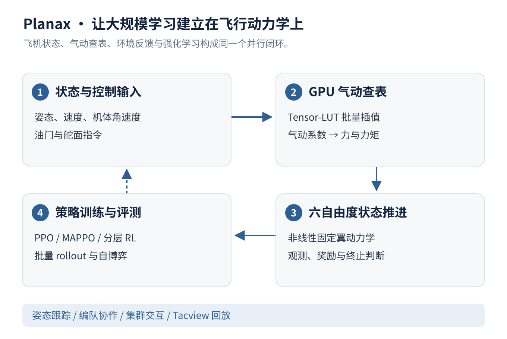
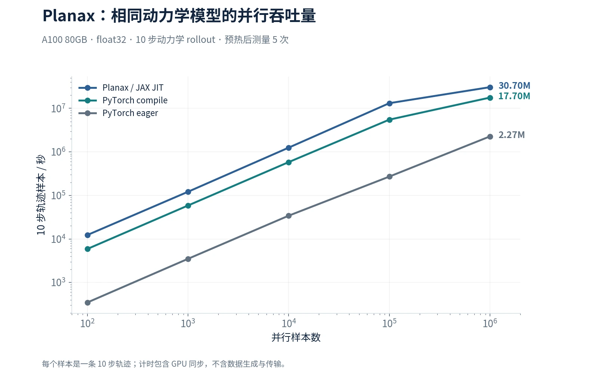

Planax：大规模无人机集群并行仿真与强化学习平台
我主导研发基于 JAX/XLA 的固定翼仿真平台，把非线性六自由度动力学、气动查表、环境反馈和强化学习放进 GPU 并行闭环，让大规模训练建立在飞行物理上。
- Tensor-LUT 在 GPU 上批量查询和插值气动系数；统一接口覆盖单机跟踪、编队协作与集群交互，并部署 PPO、MAPPO 和分层强化学习。
- 完成 50v50 集群自博弈训练；下方提供 100 架飞机同时交互的已有仿真回放，直观展示平台承载的场景规模。
- 在 A100 80GB、100 万并行样本的 10 步动力学 rollout 测试中，实测约 3070 万条短轨迹/秒；同模型下为 PyTorch eager 的 13.5 倍、torch.compile 的 1.73 倍。

